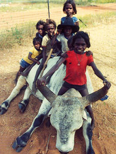

|
玄関に戻る | 目次に進む |
|
「アボリジニ」の一般公開に当たって。
 この論文は神奈川県立外語短期大学付属高等学校におけるＰＲ (Project Research：企画研究)の一環として、オーストラリア先住民 (アボリジニ Aborigine)についてまとめたものである。この授業は高校２年生が各々自分で研究テーマを決めて、１年間に わたって行われるものでありテーマは全く自由である。 この論文を作成するに当たり、様々な図書、インターネットを駆使 して情報を捜し求め、更にはオーストラリア西オーストラリア州ポー トヘドランドハイスクールの協力を得てアンケート調査も行っている。 従って、著作権等の問題があるので画像、文章等の無断引用はご遠慮 して頂くようお願い致します。 本文をご覧頂く場合は、一番上の「目次に進む」をクリックして 下さい。また、感想などは「感想記入」をクリックして書いて頂ければ 幸甚です。 尚、一般公開に当たり、引用を快諾していただきました多くの方々 にはここでお礼を申し上げます。 最後に参考文献として関係者各位をご紹介しております。 ホームページ運営責任者：船越邦治 ２００３年 ３月 １日 |